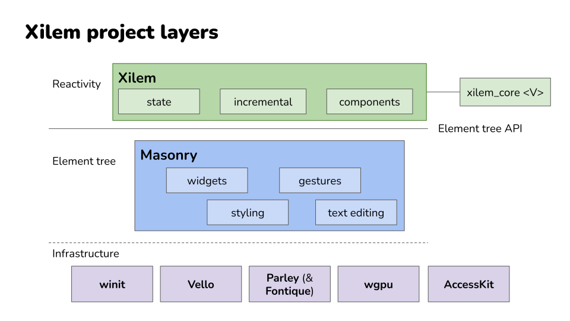

Introduction
Note: This book is currently under construction. Many chapters exist as placeholders waiting for content. We’re building this documentation alongside the framework itself, and contributions are welcome.
Building graphical user interfaces in Rust has historically meant choosing between writing verbose imperative code that manually orchestrates every UI change, or reaching for web technologies wrapped in something like Tauri. Xilem offers a different path: a reactive framework built from the ground up for Rust, where you describe what your interface should look like and the framework figures out how to get there efficiently.
If you’ve worked with React, SwiftUI, or Elm, you’ll recognize the core idea. Your application has state, and you write functions that transform that state into a description of your interface. When the state changes, Xilem automatically calculates the minimal set of updates needed to bring your UI in sync. This declarative approach means you spend less time thinking about how to update individual widgets and more time thinking about what your application should do.
This book will teach you how to harness this reactive model to build native desktop applications in Rust. We’ll start small with a simple example and build up to the patterns and techniques you need to create real applications.
A Word About Experimental Software
Important: Xilem is at version 0.4 and highly experimental. The API is evolving rapidly, and breaking changes happen frequently - even in minor releases.
As the Xilem team recently noted: “We’ve decided to experiment with some radical changes to the Xilem API, and until we’ve decided which changes we want to keep, it’s hard to predict what the roadmap will be.”
What does this mean in practice? The code you write today will likely need adjustments as Xilem evolves. Features you rely on might change their API or even disappear entirely if the team discovers a better approach. Some things that should work might not yet, and you’ll occasionally run into rough edges that haven’t been polished smooth.
This isn’t a bug in Xilem’s development process - it’s the natural state of a framework that’s being designed in public, with active experimentation happening at the architectural level. The Xilem team is trying to find the right abstractions for reactive UI in Rust, and that sometimes means throwing out code and starting over when a better idea emerges. If you need production-ready stability today, Xilem isn’t there yet. But if you’re interested in seeing how a modern UI framework takes shape and want to be part of that process, you’re in exactly the right place.
What This Book Teaches
We’ll start your journey by showing you a complete working Xilem application and walking through what each part does. This hands-on beginning gets you writing code immediately while introducing the mental models you need to understand how Xilem works.
From there, we’ll explore the fundamental concepts that make Xilem tick. You’ll learn how components encapsulate both state and the logic that renders it, how the view tree efficiently represents your UI, and how reconciliation figures out what actually needs to change when your state updates. We’ll cover event handling so you can respond to user interactions, and then move into more advanced patterns for composing complex interfaces from simple, reusable pieces.
Along the way, you’ll find a glossary explaining terms that come up repeatedly in Xilem discussions, and we’ll have honest conversations about what’s working well in the framework and what’s still being figured out. Some of these discussions will end with “we’re not entirely sure this is the right approach yet” - and that’s okay. Understanding what’s uncertain helps you make better decisions about when and how to use Xilem.
What You Need to Know
You should be comfortable with Rust fundamentals: ownership, borrowing, and traits in particular. If those concepts still feel shaky, spend some time with The Rust Book first, at least through the chapters on these topics. Xilem leverages Rust’s type system heavily, and you’ll have a much better time if you’re not simultaneously wrestling with the language and the framework.
You don’t need prior experience building graphical interfaces, though if you have worked with traditional imperative GUI frameworks like GTK or Qt, you’ll find it interesting to see how Xilem’s declarative approach changes the way you think about UI updates. Similarly, if you’re coming from web frameworks like React, you’ll recognize the reactive patterns even though the implementation details differ.
Getting Started
The next chapter drops you straight into code. You’ll see a complete Xilem application, understand what each line does, and run it on your own machine. From that concrete starting point, the rest of the book builds outward, giving you progressively deeper understanding of how and why Xilem works the way it does.
Ready? Let’s build something.
What is Xilem?
At its heart, Xilem is an answer to a question that’s been nagging Rust developers for years: how do you build graphical interfaces that feel natural to write in Rust, without fighting the borrow checker at every turn or abandoning the language’s strengths?
Traditional GUI frameworks often clash with Rust’s ownership model. They expect you to store mutable references to widgets in multiple places, update them imperatively when things change, and generally do the kinds of things that make the borrow checker unhappy. You can make it work - people have - but it often feels like you’re working against the language rather than with it.
Xilem takes a fundamentally different approach borrowed from the reactive frameworks that have transformed web development over the past decade. To understand what makes it different, we first need to look at how GUI frameworks work in general.
Understanding GUI Paradigms
Before we look at how Xilem works specifically, it helps to understand the fundamental approaches to building graphical interfaces. There are three main paradigms you’ll encounter in GUI development, and understanding these will clarify what makes Xilem different and why certain design decisions were made.
Immediate Mode: Redrawing Everything Every Frame
In an immediate mode GUI, you redescribe your entire interface from scratch every time the screen needs to update - typically many times per second. Think of it like drawing on a whiteboard: you erase everything and redraw the complete picture each time something changes.
Here’s what immediate mode code looks like in pseudocode:
#![allow(unused)]
fn main() {
// This loop runs continuously, maybe 60 times per second
loop {
// We describe the interface fresh every iteration
if button("Click me") {
counter += 1;
}
label(&format!("Count: {}", counter));
if button("Reset") {
counter = 0;
}
}
}Notice how we’re not creating button and label objects that persist. We’re simply describing that a button exists, right here in the code, and checking if it was clicked. The widgets themselves are recreated every frame.
This approach has significant advantages: the code is remarkably simple and direct, you never have to worry about keeping UI state synchronized with application state because the UI is rebuilt every frame, and there are no complex object lifetimes to manage. These benefits make immediate mode particularly popular for developer tools, debugging interfaces, and editor UI.
The trade-offs come with efficiency and capability. Redescribing everything every frame uses more CPU than updating only what changed, smooth animations and transitions require careful handling since the UI is constantly being recreated, and integration with system accessibility features can be challenging since there’s no persistent widget tree for screen readers to navigate.
Retained Mode: Long-Lived Widget Objects
Retained mode is what most traditional GUI frameworks use. You create widget objects once, they stay in memory for as long as they’re needed, and you update specific properties on specific widgets when things need to change. It’s like building with blocks: you construct your interface piece by piece, and those pieces remain until you explicitly remove them.
Here’s what the same counter looks like in retained mode pseudocode:
#![allow(unused)]
fn main() {
// Setup phase (happens once)
let button = Button::new("Click me");
let label = Label::new("Count: 0");
let reset_button = Button::new("Reset");
// Store references to these widgets somehow
let mut counter = 0;
// Set up event handlers
button.on_click(move || {
counter += 1;
label.set_text(&format!("Count: {}", counter));
});
reset_button.on_click(move || {
counter = 0;
label.set_text("Count: 0");
});
// Add widgets to window and run event loop
window.add(button);
window.add(label);
window.add(reset_button);
window.run();
}You can see the difference: the button and label are objects you create and keep references to. When something changes, you have to explicitly update the relevant widgets. The button.on_click() callback has to know about the label and manually call set_text() on it.
Retained mode is more efficient than immediate mode because you only update what actually changed, it integrates naturally with operating system accessibility features since there’s a real widget tree that persists, and it’s better suited for complex animations and transitions since widgets maintain their state between frames.
The significant downside is complexity. You have to manage references to widgets (which in Rust means fighting with the borrow checker), your application state and UI state can get out of sync if you forget to update something, and the update logic gets scattered across multiple event handlers as your application grows.
Declarative: Describing What, Not How
Declarative GUIs take a different approach: you write a function that describes what the interface should look like based on your application state, and the framework figures out how to make the actual interface match that description. You’re specifying the desired result, not the steps to achieve it.
Here’s the counter in a declarative style:
#![allow(unused)]
fn main() {
fn app_view(counter: i32) -> View {
Column::new()
.child(Button::new("Click me"))
.child(Label::new(&format!("Count: {}", counter)))
.child(Button::new("Reset"))
}
// Somewhere in your application loop:
// 1. Handle events (button clicks update the counter variable)
// 2. Call app_view(counter) to get a description of the interface
// 3. Framework diffs this against the previous description
// 4. Framework updates only the widgets that actually changed
}Notice the fundamental shift: app_view() doesn’t update anything. It doesn’t have to know which specific label widget needs its text changed. It just says “given this counter value, here’s what the interface looks like.” The framework handles the rest.
This is the approach Xilem takes. When the counter changes from 5 to 6, you call app_view(6), get a new description, and Xilem figures out that only the label’s text needs to update - it doesn’t recreate the entire interface.
The advantages are substantial: your code is easier to read and reason about because there’s one clear function showing what the interface looks like for any state, state management is simpler because the state lives in one place rather than scattered across widgets, and in Rust specifically, this approach works beautifully with ownership rules because you’re not holding long-lived references to widgets.
The main requirement is that the framework must be sophisticated enough to efficiently diff your interface descriptions and apply minimal updates. This is exactly what Xilem does with its reconciliation engine.
The Reactive Model
Now that you understand the three main GUI paradigms, let’s talk about where Xilem sits and what “reactive” actually means in practice.
As we saw in the declarative paradigm, you describe what your interface should look like, and the framework handles making it happen. Reactive programming takes this idea and adds an important piece: automatic synchronization between your application state and the interface. When your state changes, the framework automatically calls your view function with the new state, gets the updated description, and figures out what needs to change in the actual UI.
This is what “reactive” means - the UI reacts to changes in your state without you having to manually orchestrate the updates. You write a pure function from state to UI description, and the framework handles everything else. Your application state lives in one place - not scattered across widgets - and the UI is always an accurate reflection of that state.
This approach has a profound effect on how you think about building interfaces. Instead of orchestrating sequences of updates (“when this button is clicked, update that label, then enable this button, then…”), you think in terms of transformations: given this state, the interface looks like this. The function from state to UI description becomes the single source of truth about what your application looks like at any moment.
Here’s something important that might surprise you: when you’re actually building an application with Xilem, you often won’t feel like you’re explicitly “managing state” or “describing the interface for any given state.” The abstractions work so naturally that you simply describe your interface, and it works. You’re not constantly thinking “now I need to handle this state transition” - you just write what the interface should be, and the state management happens almost invisibly. This is by design. The goal is for the reactive model to feel effortless once you understand the basic pattern, not to make you constantly aware of the machinery underneath.
Xilem’s Architecture
Xilem doesn’t operate in isolation. It’s built as a layer on top of Masonry, which itself sits on top of a stack of specialized Rust libraries. Understanding how these pieces fit together helps clarify what Xilem is and isn’t responsible for.
Masonry is the foundation. It’s a widget toolkit that handles the low-level details of GUI work: managing a tree of widgets, routing events like mouse clicks and key presses, calculating layouts, and rendering everything to the screen. Masonry gives you widgets like buttons, text boxes, and containers, but you interact with them somewhat imperatively. You could build a complete application directly with Masonry if you wanted to, but you’d be writing a lot of manual update logic.
Xilem sits on top of Masonry and provides the reactive layer. When you write a Xilem application, you’re creating view trees that Xilem reconciles against the actual Masonry widget tree. Xilem handles the diffing and update logic automatically, so you never have to manually tell a widget to update. You just describe what the interface should be, and Xilem makes it happen.

Below Masonry, there’s an ecosystem of specialized libraries handling specific concerns:
- Vello does the actual 2D rendering using GPU compute shaders
- Parley handles text layout and shaping
- AccessKit integrates with platform accessibility APIs
- Winit manages windows and handles the platform-specific details of creating GUI applications on Windows, macOS, and Linux
Xilem benefits from all of these, but you rarely need to think about them directly.
Think of it like this: If you were building a car:
- Vello and Parley would be the engine and transmission - powerful, specialized components that do specific jobs well.
- Masonry would be the chassis and controls. It gives you a complete vehicle you could theoretically drive.
- Xilem is the automatic transmission and cruise control. It takes the mechanical complexity and gives you a smoother, more pleasant driving experience.
How Xilem Differs from Other Approaches
If you’ve explored GUI options in Rust before, you’ve probably encountered a few different philosophies about how to build interfaces. Now that you understand the three main GUI paradigms, let’s look at how various Rust frameworks implement them and where Xilem fits in.
Immediate Mode: EGUI
EGUI is the most popular immediate mode GUI framework in Rust. As we discussed in the previous section, it redraws the interface every frame, which makes the code remarkably straightforward. You write what looks like a simple loop that describes your interface, and it just works.
EGUI excels at developer tools and debugging interfaces - situations where you need to quickly throw together a functional UI and don’t care about perfectly matching system design language or having the most optimized rendering. The simplicity is a major strength: there are no complex state management patterns to learn, no widget lifetime issues to wrestle with, and the mental model is about as simple as GUI programming gets.
The trade-off is that EGUI’s approach makes some things difficult. Because the UI is regenerated every frame, smooth animations require careful coordination, integration with operating system accessibility features is limited, and you’re always using some CPU to redraw even when nothing changed. For applications where battery life matters or where you need deep platform integration, these limitations can be significant.
Declarative Native: GPUI and Lapce
GPUI, the framework behind the Zed editor, and Lapce’s GUI framework both take declarative approaches similar to Xilem, but with different implementation details and focus areas.
GPUI was built specifically to support a high-performance code editor, which shapes many of its design decisions. It uses a declarative API where you describe your interface based on application state, but it’s optimized heavily for the specific patterns that editors need: rendering large amounts of text efficiently, handling complex syntax highlighting, and managing multiple cursor positions. The framework has proven itself in production - Zed is a real application that people use daily - which gives confidence in the approach.
Lapce similarly built its own declarative GUI framework to support editor use cases. Like GPUI, it demonstrates that you can build production-quality applications with this programming model in Rust.
What distinguishes Xilem from these editor-focused frameworks is scope and intent. GPUI and Lapce’s frameworks were built to solve specific problems for specific applications. Xilem aims to be a general-purpose GUI framework that works well for any kind of application. The Xilem team is thinking about developer tools, yes, but also business applications, creative tools, games, and anything else you might build with a GUI. That broader scope means different trade-offs in the API design and optimization targets.
Declarative Cross-Platform: QML
Outside the Rust ecosystem, QML (Qt Modeling Language) is worth mentioning as another declarative approach, though it targets C++ rather than Rust. QML lets you describe interfaces using a JSON-like syntax, and the Qt framework handles rendering and updates. It’s been used in production for years in everything from automotive interfaces to desktop applications.
QML demonstrates that declarative GUIs can work at scale and in demanding environments. However, when you use QML from Rust (through Qt bindings), you encounter the same impedance mismatch issues that any C++ framework brings: the borrow checker fights against APIs that expect shared mutable state, and you end up writing Rust that doesn’t feel quite natural because you’re working around assumptions the underlying library makes.
Bindings to Traditional Frameworks
Some frameworks, like gtk-rs or Qt bindings, wrap existing C or C++ libraries and give you Rust bindings to them. These are mature and feature-complete, but they carry the design assumptions of their underlying libraries, which weren’t built with Rust’s ownership model in mind. You spend time working around impedance mismatches between Rust and the imperative APIs you’re calling.
These bindings give you access to decades of development effort and extensive widget libraries, which is valuable. But the experience of using them in Rust often feels like you’re fighting the language rather than working with it. The frameworks expect you to pass around mutable references to widgets and share state in ways that Rust’s ownership system resists.
Web Technology: Tauri and Dioxus
Tauri and Dioxus take the web stack approach, rendering your UI with HTML, CSS, and JavaScript (or WebAssembly). This gives you access to the mature ecosystem of web technologies and can be a great choice if you’re already comfortable there. The trade-off is that you’re running a web browser engine in your application, which has implications for resource usage and the kinds of native integrations you can easily do.
For some applications, especially those that already have web versions or where rapid iteration on visual design is important, this approach makes perfect sense. The web platform has solved many hard problems around layout, text rendering, and styling, and leveraging that work can save significant development time.
Xilem’s bet is that building GUI frameworks natively in Rust, from the ground up, will eventually give you the best of all worlds: native performance and integration, a programming model that works naturally with Rust’s ownership system, and full control over the entire stack.
The framework is still young, so it doesn’t yet have the maturity or feature completeness of alternatives that have been around longer. But the architecture is designed to get there eventually. Unlike frameworks built for specific applications like editors, Xilem aims to be general-purpose. Unlike bindings to C++ frameworks, it’s designed from the start to work with Rust’s ownership model. And unlike web-based approaches, it controls the entire rendering stack, which opens possibilities for optimization and integration that wouldn’t be possible otherwise.
What Makes Xilem “Xilem”
Three core ideas define what Xilem is and how it approaches GUI development in Rust.
Views Are Data, Not Objects
When you create a button in Xilem, you’re not constructing an object that will live for the lifetime of your application. You’re creating a lightweight description of a button that exists just long enough to be compared against the previous description and used to update the real widget tree.
This might feel strange at first if you’re used to frameworks where widgets are long-lived objects you hold references to, but it’s what allows Xilem to work smoothly with Rust’s ownership rules. You never need to worry about managing the lifetime of a widget or storing mutable references to UI elements.
State Flows Downward, Events Flow Upward
Your application maintains centralized state, and view functions transform that state into interface descriptions that flow down into the widget tree. When users interact with the interface - clicking buttons, typing text, dragging sliders - events flow back up through callbacks that modify the application state.
This unidirectional data flow makes it much easier to reason about how your application behaves than frameworks where state and logic can live anywhere.
The Framework Handles Reconciliation Automatically
You never write code that says “when this state changes, update that widget’s text property and this other widget’s color.” Instead, you write a function that describes the entire interface for any given state, and Xilem efficiently figures out what actually needs to change.
This reconciliation happens behind the scenes using techniques like tree diffing and memoization to ensure that only the parts of your interface that actually changed get updated.
Where Xilem Is Going
The reactive architecture is in place and working. You can build applications with Xilem today and see how this programming model feels in practice. What’s still evolving is the specific API surface - exactly how you express common patterns, what abstractions the framework provides for composition and reuse, and how to handle advanced scenarios that emerge as people build more complex applications.
The Xilem team is actively experimenting with different approaches to problems like component composition, state management, and performance optimization. Some of these experiments will work out and become permanent parts of the framework. Others will turn out to be dead ends and get replaced with better ideas. This is the normal process of designing a framework, just happening in public where you can see it and participate if you choose.
What this means for you: Xilem gives you the reactive programming model and the integration with Masonry’s widget toolkit, but the exact details of how you use these pieces together are still being refined. The core concepts - view trees, reconciliation, unidirectional data flow - will remain stable even as the API evolves around them.
Moving Forward
Now that you understand what Xilem is trying to accomplish and how it fits into the broader landscape of Rust GUI development, you’re ready to see it in action. The next chapter will walk you through installing Xilem and setting up your development environment. After that, we’ll build your first application and examine exactly how the reactive model works in practice.
Understanding these concepts before diving into code will help everything click into place as you work through the examples. You’ll recognize the view tree being constructed, see the reconciliation happening, and understand why the code is structured the way it is. That conceptual foundation makes learning the specifics much faster and less confusing.
Installation and Setup
Before you can start building with Xilem, you need to get your development environment ready. This involves making sure you have Rust itself installed, along with some platform-specific dependencies that Xilem’s underlying libraries need to talk to your operating system’s graphics and windowing systems.
The good news is that once you’ve done this setup once, you won’t need to think about it again. The better news is that on most platforms, what you need is straightforward to install using your system’s package manager.
Installing Rust
If you don’t already have Rust installed, head to rustup.rs and follow the instructions there. Rustup is the official Rust installer and version manager, and it’s the easiest way to get a working Rust toolchain on any platform.
After running the rustup installer, you can verify everything worked by opening a new terminal and running:
rustc --version
You should see output showing the Rust compiler version. Xilem requires Rust 1.88 or later, so make sure your version is at least that recent. If you already had Rust installed but it’s older, you can update with:
rustup update
Note on Rust versions: Xilem is experimental software under active development, and future versions may increase the minimum Rust version requirement. The Xilem team doesn’t treat this as a breaking change, so even minor releases might bump the MSRV. If you encounter compiler errors about features not being available, first try updating your Rust toolchain.
Platform-Specific Dependencies
Xilem builds on top of several libraries that interact with your operating system to create windows, render graphics, and handle input. These libraries need some system packages to be installed. The requirements are documented for Linux and BSD systems.
Linux and BSD
Linux and BSD systems require development headers for several libraries that Xilem uses. Most distributions come with pkg-config installed by default, but you’ll need to add development packages for clang, wayland, libxkbcommon, libxcb, and vulkan-loader.
On Fedora, run:
sudo dnf install clang wayland-devel libxkbcommon-x11-devel libxcb-devel vulkan-loader-devel
On Debian or Ubuntu, run:
sudo apt-get install clang libwayland-dev libxkbcommon-x11-dev libvulkan-dev
These packages give Rust’s build system access to the headers and libraries it needs to compile code that talks to the display server, handles keyboard input properly, and uses Vulkan for GPU-accelerated graphics.
For other Linux distributions or BSD variants, look for development packages with similar names in your package manager. The exact package names might vary, but you’re looking for the same underlying libraries: clang, wayland, libxkbcommon, libxcb, and vulkan-loader (or vulkan-icd-loader on some systems).
NixOS
If you’re using NixOS, the Xilem repository includes a development flake that sets up the environment with all necessary dependencies. From the root of the Xilem repository, you can run:
# For working with all crates
nix develop ./docs
# For working with specific crates
nix develop ./docs#xilem
nix develop ./docs#masonry
nix develop ./docs#xilem_web
Important: This flake is provided as a starting point and is not routinely validated by the core team. The team does not require contributors to ensure that this accurately reflects the build requirements, as most contributors and maintainers are not using NixOS. If it is out of date, please open an issue or PR to help keep it current.
Other Platforms
For platforms not specifically documented here, the general requirement is that you need a working Rust toolchain and any system libraries that the underlying graphics and windowing libraries depend on. If you run into issues during compilation, the error messages will typically indicate which system libraries are missing. The Xilem community in the Zulip chat can help troubleshoot platform-specific setup problems.
Verifying Your Installation
The best way to verify everything is working is to actually build and run a Xilem example. The Xilem repository includes several example applications you can use to test your setup.
First, clone the Xilem repository:
git clone https://github.com/linebender/xilem.git
cd xilem
Then try running one of the examples, like the to-do list application:
cargo run --example to_do_mvc
The first time you run this, Cargo will download and compile all of Xilem’s dependencies. This might take several minutes depending on your machine’s speed and internet connection. This is normal - Rust compiles everything from source, and Xilem pulls in quite a few libraries. Subsequent builds will be much faster because Cargo caches compiled dependencies.
If everything is set up correctly, you should see a window appear with a working to-do list application. You can add tasks, mark them as complete, and see the UI update reactively as you interact with it. Try clicking around to verify that the application is responsive and rendering properly.
If the build fails, read the error messages carefully. Compiler errors about missing libraries usually mean you’re missing a system dependency mentioned in the platform-specific sections above. Errors about Rust language features not being available mean your Rust version is too old - run
rustup updateto get the latest.
Setting Up a New Project
Once you’ve verified that Xilem works on your system, you’re ready to start your own project. Create a new Rust project with Cargo:
cargo new my-xilem-app
cd my-xilem-app
Then add Xilem as a dependency:
cargo add xilem
This adds the latest version of Xilem to your Cargo.toml. You can verify it’s there by opening Cargo.toml and looking for Xilem in the [dependencies] section.
Your project is now set up and ready for you to start writing Xilem code. The next chapter will walk you through creating your first application from scratch, explaining each piece as we build it.
Optional: Recommended Cargo Configuration
If you’re planning to contribute to Xilem itself or work extensively with the Xilem repository rather than just using Xilem in your own projects, there’s one optimization that will save you a lot of disk space.
The Xilem repository contains many crates and examples, which means building it compiles a lot of code and creates a large target/ directory. On Linux and macOS, you can reduce the size of this directory significantly by using split debuginfo. This tells the compiler to write one debuginfo file per dependency instead of bundling everything together.
Create or edit .cargo/config.toml in your home directory or in the Xilem repository root and add:
[profile.dev]
# One debuginfo file per dependency, to reduce file size of tests/examples.
# Note that this value is not supported on Windows.
# See https://doc.rust-lang.org/cargo/reference/profiles.html#split-debuginfo
split-debuginfo="unpacked"
This is particularly helpful if you’re working on Xilem examples or running tests frequently, as it can cut the target/ directory size roughly in half. The trade-off is negligible—debugging still works normally, builds aren’t noticeably slower, and the only real difference is how the debug information is organized on disk.
Windows users: This setting is not supported on Windows, so don’t add it if you’re developing on Windows. The Rust compiler will complain if you try.
With your environment set up and verified, you’re ready to write your first Xilem application. The next chapter walks through a complete working example, explaining how each part fits together and introducing you to the patterns you’ll use in every Xilem application you build.
Your First Xilem App
You’ve got Xilem installed, you understand conceptually what it’s trying to do, and now it’s time to write some actual code. We’re going to build the classic counter application: a window with a button that tracks how many times you’ve clicked it. This might sound trivial, but this small example contains every fundamental pattern you’ll use in larger Xilem applications.
By the time you finish this chapter, you’ll have written a working reactive application from scratch and you’ll understand why each piece of code exists and how they all work together. More importantly, you’ll start to feel how Xilem’s reactive model actually works in practice, not just in theory.
Creating Your Project
Let’s start at the very beginning. Open your terminal and create a new Rust project:
cargo new xilem-counter
cd xilem-counter
This creates a new directory called xilem-counter with the standard Rust project structure. You’ll have a src/ directory containing main.rs, and a Cargo.toml file that describes your project.
Now we need to tell Cargo that our project depends on Xilem. Run this command:
cargo add xilem
If you open Cargo.toml now, you’ll see that Cargo has added a line under [dependencies] that looks something like xilem = "0.4.0" (the version number might be different). This tells Rust’s build system to download Xilem and all its dependencies when you build your project.
What’s actually happening here? When you run
cargo add xilem, Cargo connects to crates.io (Rust’s package registry), finds the latest version of Xilem, and adds it to your project’s dependency list. The next time you build, Cargo will download not just Xilem but also all the libraries Xilem depends on, recursively. For Xilem, that’s quite a few libraries because it builds on Masonry, which builds on Vello, Parley, and several other specialized crates. Don’t be surprised if the first build takes a few minutes.
Using the Development Version
Before we continue, there’s an important detail about which version of Xilem we’re using. The examples in this book use features from the latest development version of Xilem, which means we need to tell Cargo to use the code directly from the git repository instead of the published version on crates.io.
Open your Cargo.toml file and you’ll see a line that looks like xilem = "0.4.0" under [dependencies]. Replace that entire line with:
xilem = { git = "https://github.com/linebender/xilem.git" }
This tells Cargo to download Xilem directly from the main branch of its GitHub repository, giving you access to the latest features and API improvements.
Why use the git version? Xilem is evolving rapidly, with significant API improvements happening between releases. The published versions on crates.io can become outdated quickly as the team experiments with better designs. Using the git version means you’re working with the same code the Xilem developers use daily, which makes it easier to follow discussions in the Zulip chat and ensures the examples in this book work correctly.
The trade-off is that the git version is even more unstable than a published version would be. Breaking changes can happen at any time, sometimes even between the time you clone the repository and the next day. This is part of working with experimental software. If you need stability, Xilem isn’t ready for you yet. But if you’re comfortable with rapid change and want to be part of shaping the framework’s direction, using the git version is the way to go.
After making this change, the next time you run cargo build or cargo run, Cargo will fetch Xilem from GitHub instead of crates.io.
Writing the Simplest Possible Application
Open src/main.rs in your text editor. You’ll see some default “Hello, world!” code that Cargo generated. Delete all of it and replace it with this:
use xilem::core::Edit;
use xilem::view::text_button;
use xilem::winit::error::EventLoopError;
use xilem::{EventLoop, WidgetView, WindowOptions, Xilem};
fn app_logic(count: &mut u32) -> impl WidgetView<Edit<u32>> + use<> {
text_button(format!("count: {}", count), |count: &mut u32| *count += 1)
}
fn main() -> Result<(), EventLoopError> {
Xilem::new_simple(0, app_logic, WindowOptions::new("Counter"))
.run_in(EventLoop::with_user_event())
}Save the file and run your application:
cargo run
The first time you run this, Cargo will compile Xilem and all its dependencies. This will take a while. Go get a coffee. When it finishes, you’ll see a window appear with a single button showing “count: 0”. Click it and the number goes up. Click it again and it goes up more. That’s it. You’ve built a reactive GUI application.
A note about compile times: That initial compilation seems slow because Rust is building dozens of crates from source, many of them quite large. The good news is that this only happens once. Future builds will be much faster because Cargo caches everything. If you change just your
main.rsfile, rebuilding takes only a second or two.
Now let’s understand exactly what you just wrote and why it works.
The Imports: What You’re Bringing Into Scope
#![allow(unused)]
fn main() {
use xilem::core::Edit;
use xilem::view::text_button;
use xilem::winit::error::EventLoopError;
use xilem::{EventLoop, WidgetView, WindowOptions, Xilem};
}These lines bring several things from the Xilem crate into your code. Xilem is a struct that represents your entire application. It manages the window, runs the event loop, and orchestrates the reactive update cycle. EventLoop is what actually runs your application and handles system events. WindowOptions lets you configure things like the window title.
text_button is a function from Xilem’s view module. Notice what you’re importing: a function, not a struct or type. This is your first real hint that Xilem works differently from traditional GUI frameworks. Traditional frameworks give you widget classes that you instantiate and keep around. Xilem gives you functions that create lightweight descriptions of widgets, descriptions that live only briefly and get thrown away after each update cycle.
Edit<T> is a wrapper type that Xilem uses to track when state changes. You’ll see it in the return type of your app logic function. WidgetView is a trait that describes something that can be turned into widgets on screen.
Think of it like the difference between building a house (traditional approach) versus drawing blueprints (Xilem’s approach). When you call text_button(...), you’re not constructing the actual button widget. You’re creating a blueprint that says “there should be a button here, and it should look like this.” Xilem takes your blueprint and builds or updates the real widget as needed.
Understanding Application State
#![allow(unused)]
fn main() {
fn app_logic(count: &mut u32) -> impl WidgetView<Edit<u32>> + use<> {
}This function signature tells you something fundamental about how Xilem applications work. Every Xilem application has state, and that state lives in one central place. In our counter, the state is just a single number representing how many times the button has been clicked. In a real application, the state might be a complex struct with dozens of fields, but the principle is the same: your entire application’s data lives in one place.
The parameter count: &mut u32 gives your app logic function access to that state. The &mut is crucial. It means you’re receiving a mutable reference to the state. Event handlers will be able to modify this state when users interact with your interface. Without the mut, your interface could display data but never change it.
The return type impl WidgetView<Edit<u32>> + use<> says “this function returns something that implements the WidgetView trait, and that view works with state wrapped in Edit<u32>.” The Edit wrapper is how Xilem tracks changes to your state. The impl keyword lets you avoid writing out the exact type, which is convenient because view types can get complicated and verbose as your interface grows. The + use<> at the end is a Rust feature that tells the compiler not to capture any lifetimes implicitly in this return type, which is necessary for Xilem’s reactive system to work correctly.
Why does the return type mention the state type? Xilem needs to know what type of state your views expect so it can check at compile time that everything matches up. If you try to return a view that expects a
Stringfrom a function that receives au32, the compiler will catch that mistake before you ever run your program. This is Rust’s type system helping you write correct code.
Creating the View Tree
#![allow(unused)]
fn main() {
text_button(format!("count: {}", count), |count: &mut u32| *count += 1)
}This single line creates your entire user interface. Let’s break it down into its parts.
text_button(...) is a function call that creates a button view with text inside it. It’s a convenience function that combines a button with a label. It takes two arguments: the button’s label text, and what happens when someone clicks it.
format!("count: {}", count) creates the label text. The format! macro works like println! but returns a String instead of printing to the console. The {} is a placeholder that gets replaced with the value of count. When your state is 0, this produces the string “count: 0”. When your state is 5, this produces “count: 5”. Every time Xilem calls your app logic function with a different count value, this expression produces a new label string.
Here’s something important to understand: you’re not updating the button’s label when the count changes. You’re describing what the label should be for any given count. This might seem like a subtle distinction, but it’s actually profound. In a traditional GUI framework, you’d write code that says “when the count changes, find the label widget and set its text to the new value.” In Xilem, you write code that says “the label is always the count formatted as text.” The framework figures out when it needs updating.
|count: &mut u32| *count += 1 is a closure, an anonymous function that gets called when the user clicks the button. Closures in Rust are written with vertical bars around the parameters. This closure receives a mutable reference to the state, and it increments that state by one. Notice that we explicitly annotate the parameter type as &mut u32. While Rust can often infer closure parameter types, in this case the explicit annotation helps the compiler understand exactly what types are involved in the reactive system.
The * before count is Rust’s dereference operator. Since count is a reference to a u32, not a u32 itself, we need to dereference it to access the actual number so we can add to it. Think of it like following a pointer to get to the actual data.
When you click the button, here’s what happens in sequence: the click event fires, Xilem calls your closure with &mut count, the closure increments the count, and then Xilem calls your app_logic function again with the new count value. Your app_logic function returns a new button view with an updated label. Xilem compares this new view against the old one, sees that only the label text changed, and updates just that text on the screen. The button itself doesn’t get destroyed and recreated; only its label updates.
Starting the Application
fn main() -> Result<(), EventLoopError> {
Xilem::new_simple(0, app_logic, WindowOptions::new("Counter"))
.run_in(EventLoop::with_user_event())
}This is where everything begins. Let’s look at each piece.
Xilem::new_simple(0, app_logic, WindowOptions::new("Counter")) creates a new Xilem application. It needs three things to get started: the initial state, the app logic function that knows how to turn state into a user interface, and options for the window.
The first argument, 0, is your application’s starting state. Before any button clicks, before any user interactions, this is what the count will be. When your application first starts, Xilem will call app_logic(0) to build the initial interface.
The second argument is your app_logic function. Notice you’re passing the function itself, not calling it. In Rust terms, you’re passing a function pointer. Xilem will call this function whenever it needs to rebuild the interface, which happens initially and then again every time state changes.
The third argument creates window options with the title “Counter”. This is what appears in your window’s title bar.
.run_in(EventLoop::with_user_event()) starts the application’s event loop and doesn’t return until the user closes the window. The EventLoop::with_user_event() creates an event loop that can handle both system events (like mouse clicks and key presses) and custom user events. While it’s running, Xilem is continuously listening for events: mouse movements, clicks, key presses, window resizes. When something happens that might affect your application, Xilem responds appropriately. For button clicks specifically, it runs the event handler, which modifies state, which triggers a call to app_logic with the new state, which returns a new view tree, which Xilem reconciles against the old tree to figure out what actually needs updating on screen.
This might all happen in a few milliseconds, fast enough that it feels instant to users, but the cycle is always the same: event → state change → app logic → new view tree → reconciliation → UI update.
Making It More Interesting: Two Buttons
Your counter works, but it’s pretty limited. Let’s add a reset button so you can start counting over. Here’s the new version:
use xilem::core::Edit;
use xilem::view::{flex_col, text_button};
use xilem::winit::error::EventLoopError;
use xilem::{EventLoop, WidgetView, WindowOptions, Xilem};
fn app_logic(count: &mut u32) -> impl WidgetView<Edit<u32>> + use<> {
flex_col((
text_button(format!("count: {}", count), |count: &mut u32| *count += 1),
text_button("reset", |count: &mut u32| *count = 0),
))
}
fn main() -> Result<(), EventLoopError> {
Xilem::new_simple(0, app_logic, WindowOptions::new("Counter"))
.run_in(EventLoop::with_user_event())
}Run this and you’ll see two buttons stacked vertically. The top one still counts up, and the new one resets the counter to zero. Let’s understand what changed.
flex_col is a layout container that arranges its children vertically. You imported it alongside text_button at the top of the file. The “flex” part means it uses flexible sizing: children can grow or shrink based on available space. For our simple example, that doesn’t matter much, but for more complex layouts, flexible containers are how you create interfaces that adapt gracefully to different window sizes.
The argument to flex_col is a tuple: (button1, button2). In Rust, tuples are written with parentheses and can contain different types. Xilem understands tuples of views as lists of children to display inside the container. The order matters: the first button will appear at the top, the second below it.
The reset button shows a simpler pattern than the counter button. Its label is just the string “reset”, not a formatted string that changes with state. Labels don’t have to be dynamic; they can be static text when that’s all you need.
The reset button’s event handler is |count: &mut u32| *count = 0, which sets the count directly to zero instead of incrementing it. When you click this button, the state becomes 0, Xilem calls app_logic(0), and both buttons update to reflect the new state. The counter button goes back to showing “count: 0”, and everything is back to the beginning.
Notice what you didn’t have to do. You didn’t write any code to coordinate these two buttons. You didn’t tell the counter button “hey, when the reset button gets clicked, you need to update your label.” You didn’t register the reset button as a listener for count changes. You just described what each button should display and what it should do when clicked. Xilem keeps everything in sync automatically because everything flows from the same source of truth: the count variable.
Working with Structured State
Our counter uses a single integer for state, which is fine for this example but obviously oversimplified for real applications. Let’s make it more realistic by tracking both the current count and the total number of clicks across all resets.
Replace your code with this version:
use xilem::core::Edit;
use xilem::view::{flex_col, text_button};
use xilem::winit::error::EventLoopError;
use xilem::{EventLoop, WidgetView, WindowOptions, Xilem};
struct AppData {
count: u32,
total_clicks: u32,
}
fn app_logic(data: &mut AppData) -> impl WidgetView<Edit<AppData>> + use<> {
flex_col((
text_button(format!("count: {}", data.count), |data: &mut AppData| {
data.count += 1;
data.total_clicks += 1;
}),
text_button("reset", |data: &mut AppData| data.count = 0),
text_button(
format!("total clicks: {}", data.total_clicks),
|_data: &mut AppData| {
// This button just displays information; it doesn't do anything when clicked
},
),
))
}
fn main() -> Result<(), EventLoopError> {
let initial_state = AppData {
count: 0,
total_clicks: 0,
};
Xilem::new_simple(initial_state, app_logic, WindowOptions::new("Counter"))
.run_in(EventLoop::with_user_event())
}Now your application shows three buttons. The first increments both the count and the total. The second resets the count but leaves the total unchanged. The third just displays the total and doesn’t do anything when clicked.
The state is now a struct called AppData with two fields. This is how you handle more complex application state in Xilem. As your application grows, you might have a struct with dozens of fields, maybe nested structs inside it, collections like Vec and HashMap, whatever data structure makes sense for your application. The pattern stays the same: one central state struct that contains everything your application needs to remember.
The increment button’s event handler now has a body with multiple statements instead of just a single expression. Notice the curly braces that weren’t there before. This closure modifies both fields of the state: it increments the count like before, but it also increments the total. Each click is counted in two ways.
The reset button only modifies data.count, leaving data.total_clicks untouched. This is why tracking totals across resets works: the reset action is selective about what it changes.
The third button shows an interesting pattern. Its event handler is |_data: &mut AppData| { }, a closure that receives the data but doesn’t use it (the underscore prefix tells Rust “I know I’m not using this parameter, don’t warn me about it”) and has an empty body. This button is purely informational. It displays data but doesn’t respond to clicks. You could remove the event handler entirely and pass |_| {} instead (no parameters at all), but keeping the data parameter makes the types work out more smoothly.
Run this version and experiment with it. Click the counter several times, hit reset, click the counter more, hit reset again. Watch how the count resets but the total keeps growing. This demonstrates a key advantage of centralized state: you can easily track different aspects of your application’s history because it’s all right there in one place.
Understanding the Update Cycle
Let’s trace exactly what happens during one complete interaction, from click to screen update. This will help you understand how Xilem’s reactive model works in practice.
1. Initial state: Your application starts with AppData { count: 0, total_clicks: 0 }. Xilem calls app_logic with this state and gets back a view tree describing three buttons. It builds actual widgets from these views and displays them.
2. User clicks the counter button: The click generates an event. Xilem sees that this particular button widget has an event handler associated with it (the closure you provided).
3. Event handler runs: Xilem calls your closure with &mut AppData. The closure modifies the state to AppData { count: 1, total_clicks: 1 }.
4. App logic runs again: Xilem calls app_logic with the modified state. Your function executes with count and total_clicks both being 1, so format! produces different strings than before.
5. New view tree created: app_logic returns a new view tree. It still has a flex_col with three buttons, but the first button’s label is now “count: 1” and the third button’s label is “total clicks: 1”.
6. Reconciliation happens: Xilem compares the new view tree against the old one. The structure is identical (still three buttons in a column), but two of the button labels changed. Xilem notes these differences.
7. UI updates: Xilem updates just the two label texts on the existing button widgets. It doesn’t destroy and recreate the buttons. It doesn’t rebuild the layout. It changes only what actually changed: two strings of text.
8. Application waits: The screen now shows the updated interface, and Xilem goes back to waiting for the next event.
This whole cycle typically completes in a few milliseconds. From a user’s perspective, clicking the button immediately updates the display. But understanding these steps helps you see why Xilem works the way it does: the event handler modifies state, state flows into app logic, app logic produces views, views get reconciled, and the UI updates minimally.
What Makes This Reactive
The term “reactive” gets thrown around a lot in GUI frameworks, so let’s be precise about what it means in Xilem’s context.
You declare relationships, not procedures. In a traditional imperative GUI framework, you’d write code that says “when the user clicks this button, execute this sequence of steps: increment the counter, find the label widget, convert the new count to a string, set the label’s text property to that string.” You’re giving step-by-step instructions.
In Xilem, you write code that says “the label’s text is always the count formatted as a string.” You’re declaring a relationship between the state and the interface. When state changes for any reason, the relationship is automatically maintained because Xilem re-evaluates it.
State changes propagate automatically. When you modify state in an event handler, you don’t have to manually update every part of the UI that might be affected. You just change the state, and Xilem calls your app logic function to get a fresh view tree that reflects the new state. Any part of the interface that depends on the changed data gets updated automatically because the view tree describes it as depending on that data.
The framework calculates minimal updates. You don’t have to think about which specific widgets need updating. You rebuild the entire view tree on every state change (conceptually, anyway; memoization can optimize this), and Xilem figures out what actually needs to change on screen. This might seem wasteful, but it’s not; comparing lightweight view descriptions is cheap, and rebuilding the actual heavy widgets is expensive, so Xilem avoids the expensive part whenever possible.
These three properties together, declaring relationships plus automatic propagation plus minimal updates, are what make Xilem a reactive framework. The model scales from simple counters to complex applications with thousands of widgets and megabytes of state because the pattern never changes: describe what the interface should be, modify state when things happen, and let the framework handle the rest.
Try It Yourself
Before moving on to the next chapter, try extending this counter in different ways. Here are some ideas:
Add a decrement button that reduces the count by one. Add a multiply button that doubles the current count. Add a text label above the counter button that says something different based on whether the count is even or odd. Change the layout from flex_col to flex_row to see the buttons arranged horizontally instead of vertically.
Experiment until you feel comfortable with the pattern: state lives in one place, app logic transforms state into views, event handlers modify state. When you can write these without thinking too hard about the mechanics, you’re ready to learn about the deeper concepts that make it all work.
The next chapter dives into components, the view tree structure, and how reconciliation actually works behind the scenes. You’ll learn how to compose larger interfaces from smaller pieces and how Xilem efficiently updates complex UIs.
Components and State
Understanding Components
The View Tree
Reconciliation
Event Handling
Advanced Component Patterns
Glossary
Frequently Asked Questions
Roadmap and Known Limitations
Migration Guides
Contributors
The Xilem Book is a community-driven effort to create comprehensive documentation for learning Xilem. This page recognizes everyone who has contributed to making this resource possible.
Project Contributors
This book exists thanks to the following people:
Olivier FAURE (PoignardAzur) provided the initial outline and structure proposal that shaped how the book is organized.
Richard Alves (richarddalves) created the mdBook infrastructure and implemented the detailed chapter structure, setting up the foundation that makes it easy for others to contribute content.
Content Contributors
This section will list everyone who has contributed content to the book. If you’ve contributed, please feel free to add yourself here in your pull request!
As the book grows, this section will expand to include everyone who contributes chapters, fixes errors, improves explanations, or helps in any other way. Contributions of all sizes are valuable and appreciated.
How You Can Contribute
We welcome contributions of all kinds! Whether you’re fixing a typo, writing a new chapter, or improving existing content, your help is appreciated.
Every contribution, no matter how small, makes this book better for the entire Xilem community.
The book is still in its early stages, with many chapters waiting to be written. You can help by writing new content, improving existing chapters, adding examples, fixing typos, or suggesting structural improvements.
If you would like to contribute, you can start by looking at the book structure and identifying chapters that interest you. The Xilem project discusses development in the Linebender Zulip, specifically in the xilem channel, where you can ask questions and coordinate your contribution plans.
When you submit a pull request that gets merged, feel free to add your name to this page as part of that PR. We want to recognize everyone who helps make this documentation better.
Acknowledgments
Beyond individual contributors, this book builds on the work of the entire Xilem community and the broader Rust GUI ecosystem. We are grateful to everyone working on Xilem, Masonry, Vello, and the many other projects that make this framework possible.
Special thanks to:
- The Xilem maintainers and contributors for building an amazing UI framework
- The mdBook project for providing excellent tooling for creating documentation
- Everyone who has provided feedback and suggestions